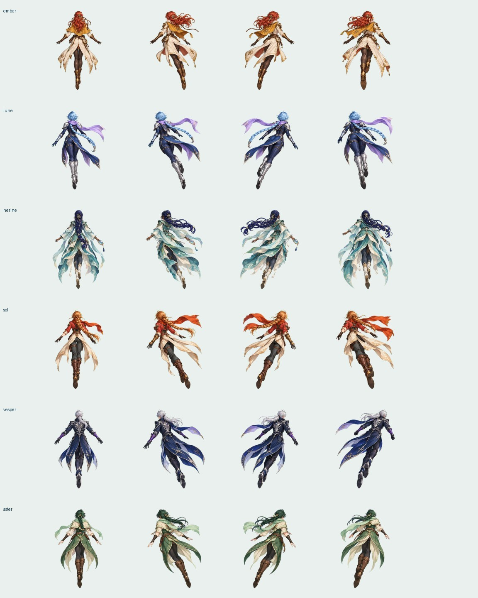

STARBORNE / WEB 8.0 · 星图与副本先选目的地，
再带着收获回来。
这一版围绕“地图 → 战斗 → 材料 → 养成 → 更高难度”重新整理。先有启动画面，再进入地图大厅，战斗仍是原来的竖屏单手自动射击。
Web 可玩版已完成这次建议先体验：进入游戏 → 副本 → 风图书库 · 普通 → 战斗结算 → 去养成。需要角色升级材料刷书库，需要武器材料刷锻场，突破材料刷裂隙。
剧情在“冒险”；浏览和配置在“角色”；祈星、背包和完整三关挑战在“营地”；声音、减少特效在“设置”。只有点“设为主战”或“应用编队”才改变出战角色。
战斗需要看清，也需要选择时机
红橙圆弹是危险，绿色加号回血、蓝色箭头加火力、青色 E 加能量、金色菱形是战利品。击破和擦弹会积累能量；满值触发 8 秒共鸣，主武器伤害增加 25%，不增加大招次数。
守卫的大范围弹幕会提前预警。副本的困难、极限会提高弹速、攻击节奏和关卡时长；用诱导瞄准弹、穿过空隙、保持输出航线和有限大招来处理。每档保留本机最高星级、成绩与通关次数。
人物与动作
放大全身立绘，保留满血、负伤和战损展示；六位旅人的背面飞行素材重画为 24 张透明姿态图，配合倾斜、姿态混合和衣摆形变。小白点仍是固定碰撞判定点。

查看生成素材记录
检查与发布状态
151 项共享检查通过；108 次三副本、三档难度、六角色的正常资源回放全部正常结束，54 次躲避输入通关、54 次静止输入未通关。这说明操作会影响这一组测试的结果，不能证明真人认为难度合适或游戏有趣。
iOS 5.0.0（9）尚未发布原生界面与测试目标已编译。完整 iPhone / iPad 自动化被主机 Mac 锁屏挡在模拟器启动阶段，失败记录已保留。解锁后继续原生验收和开声音 Release 对照，再提交内部 TestFlight。目前手机上的上一版不会自动变成这版。
检查摘要 · 逐项进度与后续验收